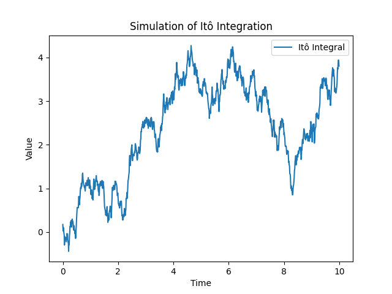

Introduction:
Itô Integration and Calculus form a fundamental part of stochastic calculus, a branch of mathematics dealing with processes containing a stochastic (random) component. It extends traditional calculus to accommodate the analysis of processes involving random movements, such as financial asset prices.
Concept:
The Itô integral is an extension of the Riemann integral to handle stochastic processes. It considers the limit of sums of random variables, incorporating both the values of the process and the stochastic increments. The Itô calculus provides rules for differentiating and integrating stochastic processes, essential in modeling the evolution of random phenomena.
Didactical Simulations:
The Python script simulates the Itô integral, showcasing the cumulative effect of stochastic increments over time. This simulation helps visualize the concept of integrating a stochastic process, providing an intuitive understanding of the Itô integral.
Practical Significance:
Itô Integration and Calculus are crucial in the modeling of financial derivatives, where prices are influenced by random factors. It has applications in mathematical finance, physics, and various fields where the dynamics of uncertain processes are of interest.
Itô Integration Simulation Plot:
Conclusion:
Simulating Itô Integration and Calculus offers a practical demonstration of how stochastic processes are integrated over time. This mathematical framework is foundational in understanding and modeling random processes, particularly in the realms of finance and physics.